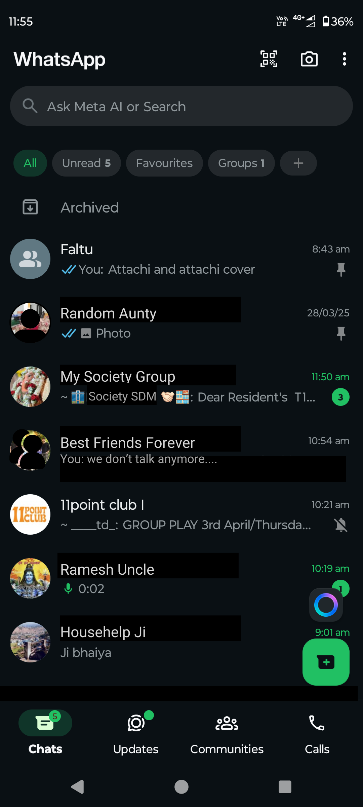
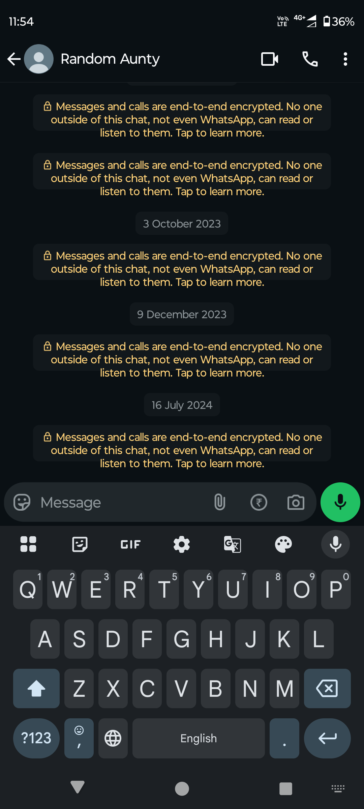

Making a Video Call on WhatsApp

Great! You've selected a contact to chat with.

Perfect! You've clicked the video call button. Your call is connecting.
👤
Random Aunty
Call connected
You
You're now on a video call! To end the call, click the red button.
✓
Call Completed!
You've successfully made a WhatsApp video call
Congratulations! You've successfully learned how to make a video call on WhatsApp.